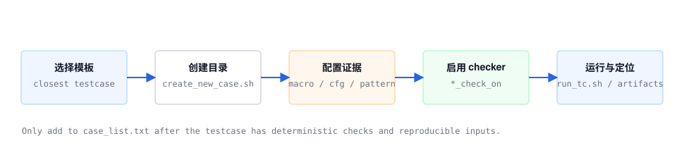

HV2M23 / DV_TCON_C
运行、回归与 Case 生命周期
使用仓库中的 run_tc.sh、regression.py 和 case_list.txt，建立可复现的运行闭环。
Source baseline: E:\DV_TCON_C · audited 2026-07-27

单 Case
cd $DV_TCON_C/script
run_tc.sh TOP <case_name> chip_tb_top random clean
run_tc.sh TOP <case_name> chip_tb_top verdiSource: script/run_tc.sh help and top/tests/run_case.py
回归
cd $DV_TCON_C/top/tests
python regression.py
# Coverage variant
python regression_cov.pyregression.py 从 case_list.txt 读取 testcase，并生成 bsub -Ip run_tc.sh TOP ... random clean 命令。
提交回归前
- case 名称与目录、主 .sv class、test_lib include 一致。
- cfg_frame 数量覆盖 FRAME_NUM，或明确依赖复用规则。
- checker 开关与验证目标一致，不能只依赖波形人工判断。
- golden 命令在仿真目录生成预期文件，日志没有 file-open error。
结果目录建议保留内容
复现必需
- 完整命令、seed、case 名和源码 revision。
- compile/run log 与第一个 UVM error 上下文。
- 本次生成的 golden 和 actual dump。
调试必需
- 波形数据库及保存范围。
- cfg frame、setting packet、关键寄存器 dump。
- checker 开关与模型命令行。
回归清单治理
当前 case_list.txt 的唯一名称与实际目录存在差异。新增清单项前应自动检查目录存在、主 class 可编译、输入文件齐全，并把不存在的名称单独报告，避免“提交了回归但实际没有运行目标”的假覆盖。